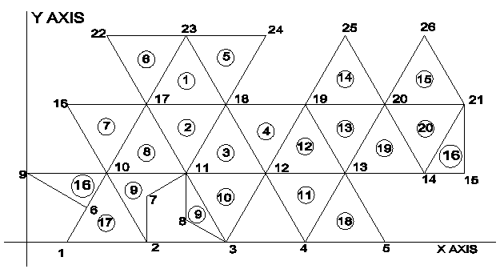
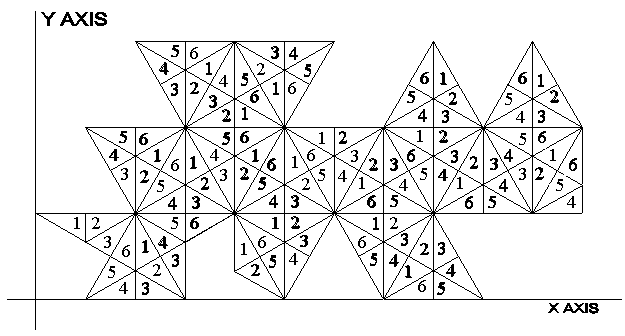

Below, you will be able to obtain a C language program I wrote which converts (longitude, latitude) coordinates into (x, y) coordinates for Fuller's icosahedron based world map. There are two programs to download. The first file is a short "driver" program which interfaces with the user and calls the conversion program. This will give you an example of how to call the conversion routines should you wish to write your own driver program. The second file contains the conversion routines. Not included is the C language project (.prj) file which, if you know C, is just a file containing the name of the other two files.
I do not claim that these programs are coded in the most efficient way, nor even that they are very well organized, but they should work.
Each C language compiler is slightly different, so you may have to modify the code slightly to get it to work on your system.
To "download" simply open the file by clicking on the option below and then save the file to your disk by clicking on the "save" or "save as" option provided by the web browser you are using to view this page. (Some web browsers have the "save" option under the "File" option. So you'll have to click on "File" and then on "Save as".)
The transformation procedure uses the following plane equilateral triangle number assignment (shown in circles) and vertex number assignment. Note that triangles 9 and 16 are divided and so occur in two different locations.
The edge length of the equilateral triangles is 1, from which the (x, y) coordinates for each of the 26 vertices can be calculated.
The LCD triangles (6 for each equilateral triangle) are labeled as shown in the next illustration.
If you are interested in some of the details involved in the transformation you can check out the other web pages I have written. Or you can get a copy of my paper "Fuller's Dymaxion(TM) Map" in the journal Cartography and Geographic Information Systems, Vol. 21, No. 4, 1994, pp. 243-246. Although this paper does not contain the exact transformation equations I used in the above program it does describe the transformation in general. The exact transformation equations are described in my paper "Exact Transformation Equations for Fuller's World Map." This paper will be published sometime in the near future. You can also contact me directly by e-mail for further details.
Usage Note: My work is copyrighted. You may use my work but you may not include my work, or parts of it, in any for-profit project without my consent.